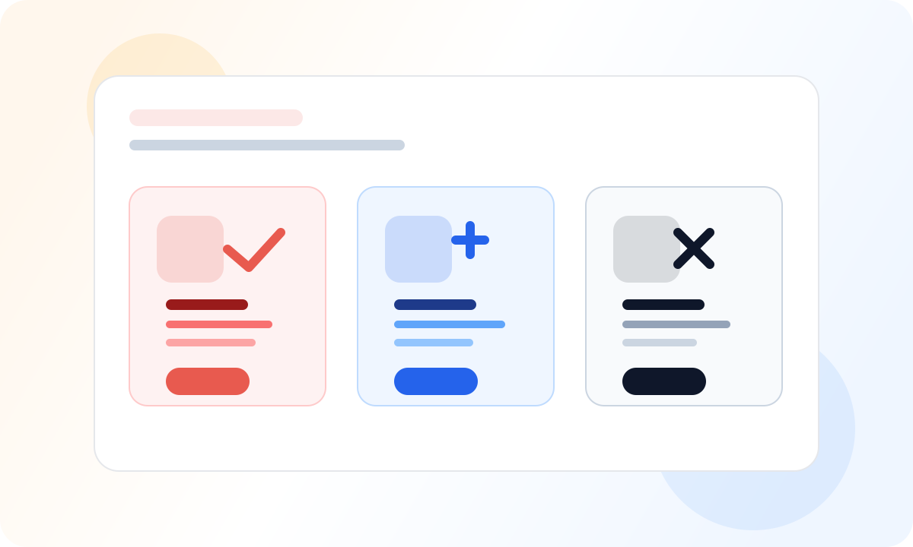

我只想尽快用起来
优先选国内在线模型，最省心，最适合第一次配置和验证连通性。
ClawStart 模型配置
如果你卡在"到底先选哪个模型服务商"，这页就是给你的。先选最容易跑通的，跑通之后再考虑换更强的。
API Key 就是模型服务商给你的一串专属密码，用它来让 AI 助手连接模型。

第一步
优先选国内在线模型，最省心，最适合第一次配置和验证连通性。
可以继续用你熟悉的服务商，但要先确认当前网络和账单都正常。
后续可以再切到本地模型，比如 Ollama，但不建议把它作为第一次必走路径。
第二步
国内用户第一次主推这条，连通性和拿到 Key 的概率通常更高。
如果你本来就有稳定的海外 API 资源，这条路径会更顺手。
它适合后续控成本和离线使用，但不适合作为第一次主路径。
适合大多数中国大陆用户。拿到 API Key 相对容易，网络和连通性也更稳定。
适合已经有 OpenAI / Anthropic 等海外模型服务的用户，但要确认网络、余额和可访问性。
适合后续想控成本、要本地化或愿意折腾环境的用户，不推荐作为第一次主路径。
第三步
最常见的问题不是服务商坏了，而是复制时多了空格、少了字符，或填错了对应平台的 Key。
如果 Key 明明没错，但连接一直失败，很多时候是当前网络环境无法连接到模型服务器。
别用“最强模型”当成功标准，第一次能稳定返回内容，才是现在最重要的指标。
第四步
测试连接能稳定通过
能发出一个问题并正常得到回复
你知道当前这条模型路径以后还能继续用
什么时候该换模型
继续阅读
这页解决的是“选哪条模型路径最稳”。一旦连接正常，最重要的事就是马上做一个任务，不要继续陷在参数和服务商对比里。
如果你还没建立“跑通标准”，先回新手页，把第一次使用目标重新对齐。
回新手入门 →当模型已经稳定，你就可以进入下一阶段，给 ClawStart 装上更明确的能力。
进入 Skills 指南 →如果你仍然遇到 Key 失效、网络不通或模型连不上，这里会比继续换服务商更有效。
遇到问题？去排障 →添加后可获得1对1答疑支持，优先解决安装和配置问题

打开微信/QQ扫码即可加入